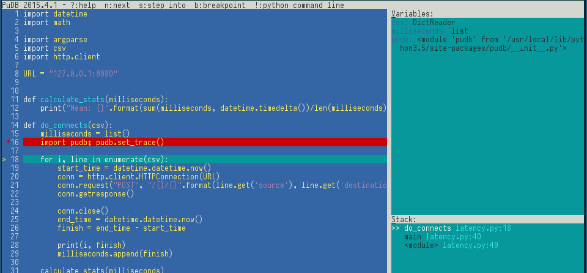
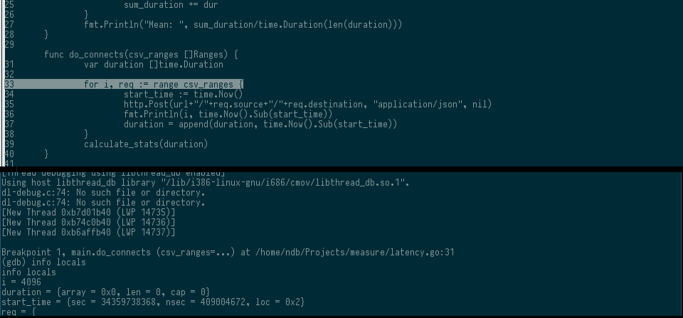

Everybody lives Python, the syntax is fast to get used to and you can write most of your code on a constant pattern if you follow the PEP8. Lots of libraries are available and the community is vibrant and enthusiastic with the evolution of the language.
For this exercise, the goal will be create a piece of code on Python that does the same thing on Golang.
It will parse a CSV file with two columns [source, destination] and send an HTTP POST with the information for a pre-configured URL, as much as the lines of the files. While sending, the software must compute and show the latency of each request for the user. It should output the mean on milliseconds at the end.
Python have the argparse library, the first positional parameter csv is opened in a stream and passed to the DictReader class, this guy will iterate by the lines with a dict output.
import csv
import argparse
def parse_lines(csv):
for i in csv:
print(i)
def main():
try:
parser = argparse.ArgumentParser(description="Parse input CSV file")
parser.add_argument('csv', nargs="?", type=open, help="CSV Filepath")
args = parser.parse_args()
reader = csv.DictReader(args.csv)
parse_lines(reader)
except FileNotFoundError:
print("File not found")
args.csv.close()
if __name__ == "__main__":
main()Lets try the similar stuff on Go, first thing to notice is the lack of built-in complex features, looks like ppl run on DIY mode, so, theres no default "dictreader". You run through the csv file populate some structs and you have a list of maps in the end.
package main
import (
"flag"
"encoding/csv"
"io"
"os"
"fmt"
"bufio"
)
type Ranges struct {
source string
destination string
}
func read_csv(r csv.Reader) {
var ranges []Ranges
for {
record, err := r.Read()
if err == io.EOF {
break
}
ranges = append(ranges, Ranges{source: record[0], destination: record[1]})
}
for r := range ranges {
fmt.Println(ranges[r].source, ranges[r].destination)
}
}
var csv_arg = flag.String("csv", "", "CSV filepath")
func main() {
flag.Parse()
file, err := os.Open(*csv_arg)
if err != nil {
fmt.Println("Error:", err)
os.Exit(1)
}
defer file.Close()
r := csv.NewReader(bufio.NewReader(file))
read_csv(*r)
}Now that we have our POST parameters lets make the request.
For this test lets create a synchronous app, so it will not use Goroutines or loop reactors for async i/o.
def calculate_stats(timing):
print("Mean: {}".format(sum(timing, datetime.timedelta())/len(timing)))
def do_connects(csv):
timing = list()
for i, line in enumerate(csv):
start_time = datetime.datetime.now()
conn = http.client.HTTPConnection(URL)
conn.request("POST", "/{}/{}".format(i.get('source'), i.get('destination')))
conn.close()
end_time = datetime.datetime.now()
timing.append(start_time - end_time)
calculate_stats(timing)In go we have the same methods
func calculate_stats(duration []time.Duration) {
sum_duration := time.Duration(0)
for _, dur := range duration {
sum_duration += dur
}
fmt.Println("Mean: ", sum_duration/time.Duration(len(duration)))
}
func do_connects(csv_ranges []Ranges) {
var duration []time.Duration
for req, r := range csv_ranges {
start_time := time.Now()
http.Post(url+"/"+r.source+"/"+r.destination, "application/json", nil)
fmt.Println(req, time.Now().Sub(start_time))
duration = append(duration, time.Now().Sub(start_time))
}
calculate_stats(duration)
}On a local webserver 127.0.0.1
➜ measure python3.5 latency.py input.csv
0 0:00:00.008750
1 0:00:00.002667
2 0:00:00.002517
3 0:00:00.002474
4 0:00:00.002458
Mean: 0:00:00.003773
➜ measure go run latency.go --csv input.csv
0 2.806206ms
1 2.150794ms
2 2.35518ms
3 2.047501ms
4 1.974195ms
Mean: 2.378299msLets continue with our analysis of both language, as we can see for scripting both are great, you have Arrays and Maps in Go and Lists and Dicts in Python, you iterate through them and apply some I/O using the procedural statements.
Now lets say we need to test it on a Windows x86 environment, you will need to install Python 3.5, all the dependencies used on the project, maybe create a virtualenv, thats a lot of work for a simple task. In Go 1.5 we have built-in cross compilation:
➜ measure GOOS=windows GOARCH=386 go build -v latency.go
➜ measure file latency.exe
latency.exe: PE32 executable (console) Intel 80386 (stripped to external PDB), for MS WindowsThe deployment of the code is a statically linked binary on the right folder, you can achieve something similar with Twitter PeX [1]
For Python I have been using pudb on the last weeks and I really like it for things I have to spend more time trying to understand. The interface is good, you have variables on the context, your python stack and a shell to interact with your live code.

For Go by default ppl are using GDB[2], you have to compile your binary first.

Python 3.5 provides I/O concurrency via the package asyncio [3], it uses coroutines and an event loop pattern. Asyncio have a good syntax. We just need to note that we are not blocking the calls here, lets say the response is getting 1 sec to get back, if we have 5 calls we will have 5s of wait with the old blocking code, now we need to wait just 1 second for all calls.
➜ measure time python3.5 latency.py input.csv
0:00:01.025869
0:00:01.020087
0:00:01.019869
0:00:01.019845
0:00:01.019862
Mean: 0:00:01.021106
python3.5 latency.py input.csv 0.48s user 0.02s system 32% cpu 1.530 total
async def do_connects(line):
start_time = datetime.datetime.now()
conn = await aiohttp.request("POST", "{}/{}/{}".format(
URL, line.get('source'), line.get('destination'))
)
out = await conn.read()
end_time = datetime.datetime.now()
finish = end_time - start_time
print(finish)
time_wait.append(finish)
def main():
...
# Get the event loop from asyncio
loop = asyncio.get_event_loop()
# Futures encapsulate the async execution of a callable
# Its like Deferred of Twisted, here we have a list of things to process
to_do = [
asyncio.ensure_future(do_connects(line))
for line in reader
]
# Now we will wait the coroutines list to be completed, by event loop processing
wait_coro = asyncio.wait( to_do )
loop.run_until_complete(wait_coro)
calculate_stats()
loop.close()
args.csv.close()Here be dragons.
Instead of a loop event, go have the idea of Goroutines and channels to communicate between them, it is a very interesting approach based on CSP [4].
func calculate_stats(lines int, ch <-chan time.Duration) {
sum_duration := time.Duration(0)
// Consume the channels and calculate mean
for i := 0; i < lines; i++ {
sum_duration += <-ch
}
fmt.Println("Mean: ", sum_duration/time.Duration(lines))
}
func do_connects(url string, ch chan<- time.Duration) {
start_time := time.Now()
resp, err := http.Post(url, "application/json", nil)
if err != nil {
ch <- time.Duration(-1)
return
}
resp.Body.Close()
end_time := time.Now().Sub(start_time)
fmt.Println(end_time)
// Fill the channel buffer with latency
ch <- end_time
}
func read_csv(r csv.Reader) {
first, lines, ch := true, 0, make(chan time.Duration)
for {
record, err := r.Read()
if !first {
if err == io.EOF {
break
}
// Launch a Goroutine passing the channel as argument
go do_connects(url+"/"+record[0]+"/"+record[1], ch)
lines++
}
first = false
}
calculate_stats(lines, ch)
}
➜ measure go run latency.go --csv input.csv
1.008839797s
1.010029273s
1.010747957s
1.011410825s
1.012543644s
Mean: 1.010714299sAbout the default libraries, I can't conclude much with a simple example like that, but as you can see Go is more on DIY side, you have to implement more stuff that Python have builtin.
Go concurrency patterns are awesome with very good design decisions, it has cross compile by default and it is fast, this makes Go a language of choice for IT startups like Docker, Hashicorp and Prometheus to name a few. Go is also static typed and have a GC. Python on the other side is a very mature language with a big support of the scientific community. Lots of syntax sugar on 3.x and builtin modules addition made the language yet more richer, the market share of Python gets bigger every year, and complete powerfull framework like Django or Flask give it more traction.
It is definitely a healthy "Titan war", without a winner on the short term.